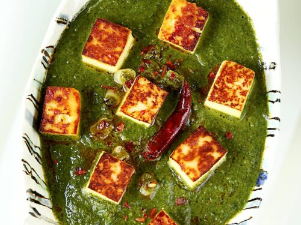

Wrong recipe? Click here to return home!

Palak paneer is one of my favourite Indian dishes to make and dare I say I've become pretty good at it! It's made with spinach and paneer and I've found it goes well with grilled chicken tikka. Note: it's different to saag paneer because it only contains spinach and not other greens (I actually learnt this from Swasthi's Recipes and this recipe is kind of an amalgamation of Saag Paneer and Palak Paneer).